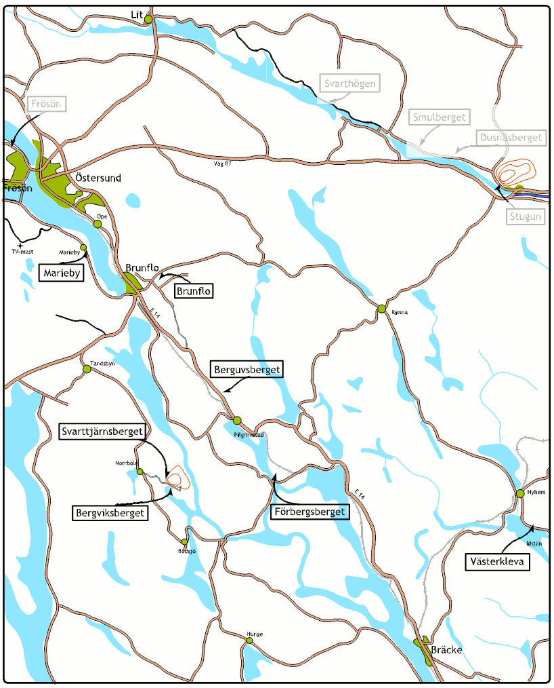
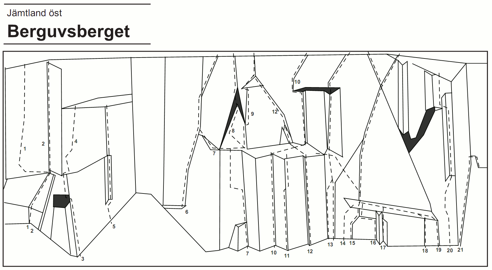
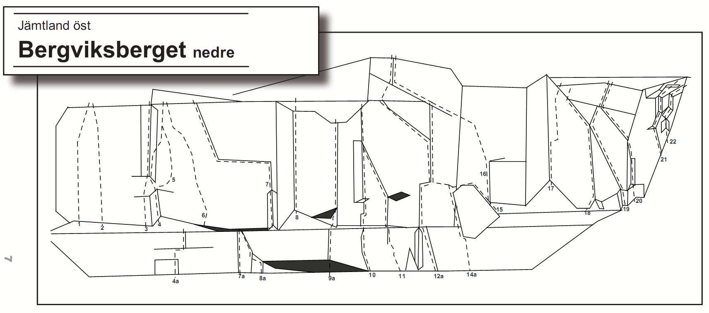
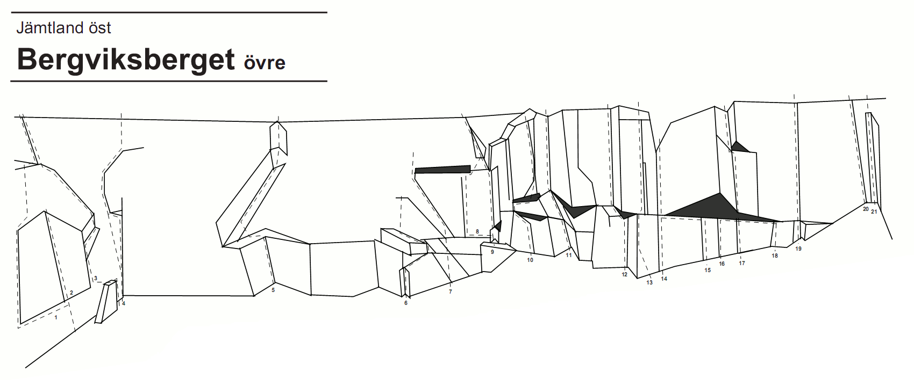
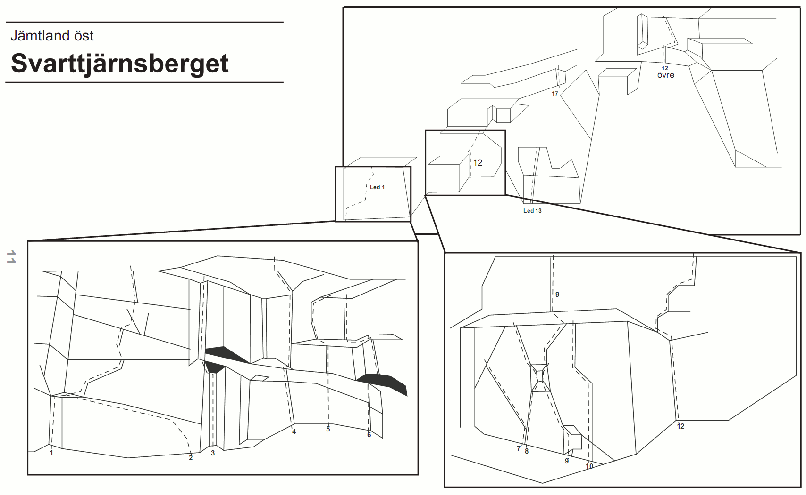
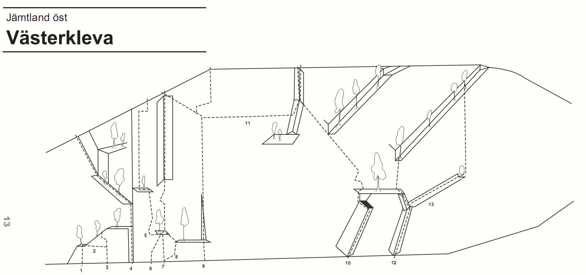
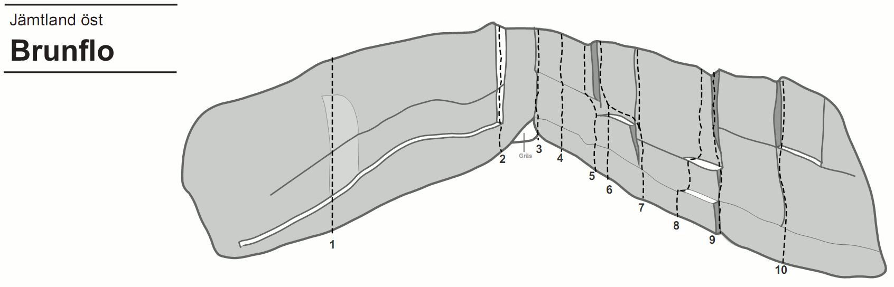
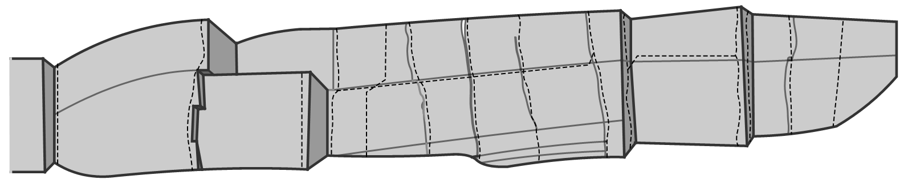

Jämtland Öst
-->
Allmänt
Jämtland Öst består av ett flertal klippor spridda över östra delen av Jämtland.
http://hem.bredband.net/b755182/klattring/jamtland_ost_2004-08-08.pdf Förare över Jämtland Öst hittas här.
Gruvsamhetsgradering
Gruvsamhetsgradering, eller allvarlighetsgradering, är ett graderingssystem som använts av Östersunds klätterklubb och även i Hälsingeföraren för att ge en fingervisning om både hur ihållande en led är och hur pass väl den går att säkra.
A
är minst allvarlig, och innebär att det finns lättare passager eller vilopositioner mellan svårigheterna och/eller att man kan placera säkringar ovanför sig praktiskt taget hela tiden.
B
motsvarar normalt ihållande och säkrade leder.
E
är mest allvarlig och innebär att leden är extremt ihållande och helt osäkrad, med
C
och
D
nånstans mittemellan.
Vägbeskrivning
Berguvsberget
21 leder, 10-45 m, 0% bb
Bergviksberget
45 leder, 6-45 m, 0% bb
Klippan består av gnejs och granit och har nu många mycket fina leder med genomgående goda säkringsmöjligheter. Man finner både medelsvåra och svåra leder av hög kvalitet vilket bör locka klättrare av alla kategorier. Den höga klassen på de lättare lederna är kanske det mest utmärkande.
Berget bjuder på sprick-, hörn- och kaminklättring i en replängd. Det är nära till väg (50 m), tältplats och vatten med fin sandstrand. Solstolar och strandservering saknas dock.
Svarttjänsberget
20 leder, 7-25 m, 8% bb
500 m närmare Höviken (åt Östersundshållet) finns ytterligare ett berg som heter Svarttjärnsberget. Svarttjärnsberget ger samma fina klättring som man finner på Bergviksberget. Även dessa väggar vetter mot söder.
Detta berg har ingen riktigt stor vägg, utan är uppdelat i flera mindre väggpartier. Från vägen ser man bara en liten del av berget, men följer man bergssidan upptäcker man alla vinklar och vrår. Ett ovanligt berg i Jämtland ! Även om berget inte har någon större vägg finns några kortare verkligen utmanande leder. Klippan är av mycket god kvalitet.
Västerkleva
25 leder, 10-90 m, 0% bb
Brunflo
40 leder, 6-12 m, 0% bb
Förbergsberget
Mariebybrottet

Leder
Berguvsberget

- 1
- Blodkorven
- 5+
- Där taket på Överraskningen går över i hörnet går man ut till vänster på plattan. Traversera några meter och gå sedan rakt upp.
- 2
- Överraskningen
- 4-
- Börja i hörnet till vänster om en stor spricka. Klättra upp några meter. Fortsätt till höger under taket och så vidare rakt upp i hörnet till toppen.
- 3
- Korven
- 5
- Börja med att klättra ”arreten” till höger om hörnet upp till överkanten av taket. Gå ut till vänster på takläppen och sedan rakt upp till hyllan.
- 4
- Blodig Jord
- 6
- Från hyllan går man åt vänster upp på några block, sedan ut till höger på väggen och rakt upp.
- 5
- Linje 3
- 5-
- Börja med att runda ett litet överhäng åt vänster. Gå sedan något till höger och vidare upp i ett litet hörn. Kliv upp på en hylla till vänster vid hörnets slut och fortsätt rakt upp i sprickan, som är ledens krux.
- 6
- Kort Spricka
- 4
- Klättra sprickan upp till stora block. Kliv upp på rampen. Gå till vänster och följ sprickorna till toppen.
- 7
- Räddningen
- 5-
- Första replängden hör knappast till bergets ”godbitar”. Blocken mot slutet av replängden har inte hårdtestats. Gör inte det Du heller.<br>'''1''' grad: 5 20 m. Starta med viss svårighet upp i det korta hörnet. Kliv ut till vänster. Undvik träden längre upp genom att gå ut på vänstra väggen. Följ skivorna några meter. Traversera sedan till höger över ”tvivelaktiga” block ut på stora hyllan. Standplats. <br> '''2''' grad: 4 25 m. Traversera tillbaka igen och upp på rampen. Fortsätt runt hörnet och upp via sprickorna till toppen.
- 8
- Katedraltaket
- 6-
- Leden innehåller bl a ovanlig takklättring. Själva kruxet är svårsäkrat. Klättra från vänstra kanten av stora hyllan snett upp åt vänster några meter och sedan med någon dragning åt höger längs en spricka upp under taket. Kaminklättra ut i taket. Svårast första biten.
- 9
- Fjädrande Foten
- 6
- Klättra från stora hyllans vänstra kant några meter rakt upp. Gå därefter in i en svår lay-back upp till en utskjutande spets. Fortsätt vidare över denna och följ sprickan upp.
- 10
- Fläsket Brinner
- 6
- '''1''' VI- 15 m Klättra den stora sprickan i hörnet, som avslutas mitt på hyllan. <br>'''2''' VI 30 m. Första gången fritt: J.Liljemark, R.Hedman <br>Starta från högra kanten av den stora hyllan uppför den största sprickan. Gå med svårighet till vänster vid taket och upp i sprickan.
- 11
- Guppande Selen
- 6
- Klättra kanten till höger om Fläsket Brinner.
- 12
- Bror Olssons Spricka
- 6
- Detta är nog den ”flottaste” formationen på hela berget. <br> '''1''' grad: 6- 15 m En stor fin spricka går över ett litet tak efter ca 10 m och vidare upp på den stora hyllan. Nödvändigt med stora kilar. <br>'''2''' grad 6 30 m Klättra upp på skivorna och vidare i sprickan, som går upp åt vänster under taket.
- 13
- Upp Över Taket
- 6-
- '''1''' grad: 5 20 m <br>Börja i hörnet till höger om Bror Olssons Spricka med några meters kaminklättring för att sedan ta till vänster och följa några sprickor upp till en björk. Ta med stora kilar. <br> '''2''' grad: 6- 25 m <br>Fortsätt i sprickan upp till taket. (Graderingen gäller inte om man tar trädet till hjälp). Därefter luftig och fin spreisklättring ut och över taket, som är lättare än det ser ut. Följ sedan sprickan.
- 13b
- Instegsvariant U.Ö.T.
- 5
- Klättra den fina handjamspricken till vänster om normalinsteget.
- 15
- Pölan
- 5-
- Bortsett från den vassa skivan vid insteget, som också är den svåraste passagen, går denna led upp genom ett mindre brant parti av berget, som bitvis är mossigt. Den tillhör alltså knappast de intressantare lederna, men är ändå en av de få tänkbara nybörjarlederna på berget när man väl har klarat av det lite tunga insteget. <br>'''1''' V- 25 m <br>Starta några meter till höger om led 10. Klättra skivan upp till en hylla. Gå till vänster och följ sprickan, som går snett upp till höger förbi några träd. Gör standplats där sprickan delar sig. <br>'''2''' IV 15 m <br>Fortsätt i den vänstra sprickan till toppen.
- 20
- Ukio Tosch
- 6-
- Leden går längst till höger på en pelare längs en ”bananformad” spricka. Fin lay-backklättring. Svårsäkrat i början efter insteget p.g.a. klättringens karaktär. Bör inte ledas av ”nybörjare i graden” Gå upp på blocket närmast sprickan. Följ sprickan och det påföljande hörnet för att på slutet gå ut på kanten till vänster.
- 21
- En Rolig Grej
- 5-
- Följ den stora inte alltför branta sprickan upp på toppen av blocket.
Bergviksberget, nedre

- 1
- Tosteda
- 4
- Börja med att klättra över några ”bullar”. Följ sedan ett hörn några meter, gå något åt vänster och upp till nästa hörn och vidare mot toppen.
- 2
- Rosita
- 3
- Följ en tunn hörn- och sprickformation.
- 3
- Raindrops
- 5-
- Leden börjar vid en tunn spricka på en kort platta som ligger till vänster om ett markant hörn. Gå sedan in i det iögonfallande hörnet och följ det ända upp.
- 4
- Long John
- 6-
- Klättra det markanta hörnet och tag sedan den tydliga sprickan på högra väggen. Avsluta med lite väggklättring upp mot hyllan.
- 4a
- Direkt Insteg Long John
- 4
- Klättra upp på skivan och hangla ut till höger så man når den fina sprickan som går upp till hyllan.
- 5
- John Silver
- 4+
- Traversera från slutet av första hörnet på Long John ut till höger på bra steg, men sämre grepp. Fortsätt efter några meter rätt upp till ett överhäng. Runda överhänget på höger sida. Därefter vidare upp i det korta, fina hörnet. Gå ur hörnet åt vänster och sedan vidare rakt upp med dragning åt vänster till toppen.
- 6
- Musse Pigg
- 6+
- Börja med en vild lay-back på den kraftiga skivan. Följ sedan den böljande inbuktningen med dragning åt vänster ända upp.
- 7
- Farsans Fart
- 6
- Börja i ett överhängande hörn med en spricka. Efter hörnet fortsätter man i två sprickor och passar på att vila sig när de tar slut, fortsättningen medger tyvärr inte så mycket av detta. Hangla på goda grepp ut åt vänster 7-8 m på den släta plattan och följ en spricka snett upp åt vänster (kruxet) till toppen.
- 7a
- Insteg Farsans Fart
- 5+
- Den tydliga sprickan under insteget till Farsans Fart. Medtag bivackutrustning.
- 8
- Galaxer i Mina Braxer
- 4
- Klättra det stora hörnet. Kruxet är längst upp.
- 8a
- Dir. Inst. G. i. M. B.
- 5+
- Börja längst inne i hörnet under taket. Gå sedan ut på väggen till vänster, klättra kanten och följ sedan sprickan snett åt vänster.
- 9
- Kulosprickan
- 5+
- Avigt takproblem som övergår i en fin jamspricka.
- 9a
- Insteg Kulosprickan
- 6-
-
- 10
- Rip Kirby
- 6-
- Leden startar vid en stor gran. Börja med en spricka upp till hyllan. Jam- och väggklättring upp till ett hörn. Följ sedan hörnet och sprickan till toppen.
- 11
- Blixt Gordon
- 6
- Klättra på goda grepp snett åt vänster och fortsätt på ”knoppar” till nästa spricka, krux, svårsäkrat. Från hyllan är det lättare och mer välsäkrat. Klättra den korta sprickan till ett överhäng, fortsätt snett åt vänster till en fin spricka som går snett upp till vänster och som sedan går ihop med Rip Kirby.
- 12
- Krysskolvning
- 6
- Leden börjar där den stora hyllan har sin avslutning till höger. Börja med en tunn spricka, fortsätt något åt höger, sedan rakt upp och något åt höger igen mot en större spricka och lättare terräng. Följ sprickan i ca 8 m och gå därefter snett åt vänster i en mycket tunn spricka. Avsluta med samma utsteg som Mona Lisa.
- 12a
- Insteg Krysskolvning
- 5+
- En kort spricka som går snett upp åt vänster.
- 14a
- Direkt Insteg Mona Lisa
- 5
- Med detta insteg blir Mona Lisa en fin och varierad led. Följ sprickan upp till blocket, gå in bakom blocket och kaminklättra upp till dess topp och gör standplats där, eller klättra ner ”på baksidan”. Fortsätt sedan på Mona Lisa.
- 15
- Mona Lisa
- 4
- Där Nedre Väggen drar sig upp mot höger står ett stort block intill väggen. Klättra upp på blocket. Från blocket kliver man ut på väggen och traverserar på bra steg och grepp fram till en spricka med två mindre ”stubbar”. Följ sprickan ca 12 m till en större spricka som drar sig åt vänster. Följ den några meter och fortsätt rakt upp i en tunnare spricka. Sedan kan man antingen avsluta med en svårare friktionsklättring över det sista svaet eller gå ut till vänster och upp i en ränna.
- 16
- Leonardo
- 4+
- Leden börjar i ett hörn några meter till höger om det stora blocket. Börja med hörnet, gå sedan något åt vänster och fortsätt upp i de tunna sprickorna. Vidare i en bred spricka till Mona Lisa.
- 17
- Snowdrops
- 5-
- Ett stort hörn. Börja med en bred jamspricka och svinga upp i hörnet och följ det upp.
- 18
- Flottleden
- 4+
- En mycket fin jamspricka som avslutas med en flott hangelspricka med goda grepp. Leden börjar 10 m till höger om Snowdropshörnet på en kort friktionsplatta som leder till den välsäkrade sprickan. Följ sprickan och hangla upp till vänster där sprickan tar slut.
- 19
- Röda Halvmånen
- 4+
- Börja med ett kort hörn, fortsätt över ett litet överhäng (”näsa”) och följ en tunn spricka upp till vänster så att man når slutet av Flottleden-sprickan. Gå sedan snett upp till höger i en lätt utstegsspricka.
- 20
- L.R.F.
- 5+
- Klättra ett kort hörn upp till en hylla, fortsätt i nästa hörn och följ sedan en bred spricka ända upp.
- 21
- Gubben på Ängen
- 5-
- Börja med att klättra sprickan rakt upp till en liten hylla, gå sedan till höger på rampen och vidare upp i utstegshörnet.
- 22
- Ring Så Sopar Vi
- 4+
- Klättra det tydliga hörnet till höger om led "G. på Ä." och fortsätt vidare med nästa hörn till topps.
- 7a
- Utsteg Farsans Fart
- 7
- När du är framme vid hangelsprickan fortsätt klättra rakt upp då du ser du 2 borrbultar, klättra sedan rakt upp till toppen.
Bergviksberget, övre

- 1
- Stor-Snuppan
- 6
- Gå upp till taket som vid led 22. Klättra till vänster under taket tills den stora sprickan nås. Följ den till hyllan och fortsätt uppför den korta väggen till nästa hylla.
- 2
- Lill Snuppan
- 6
- Starta till vänster om startblocket på led 1 och 21. Klättra väggen upp mot taket och den tunna sprickan. Följ sprickan och avsluta med den korta väggen upp till hyllan.
- 3
- Laines Födelsedag
- 4
- Starta på det stående blocket vid insteget på Pigalle. Kliv från blocket in i hörnet, följ det några meter, gå sedan åt höger i sprickan till nästa spricka som går snett upp åt vänster. Följ denna spricka upp till hyllan. Kliv åt höger upp på ryggen och klättra med dragning åt vänster mot toppen.
- 4
- Pigalle
- 5-
- Leden börjar uppe i hörnet där den nedre väggen övergår till den övre. Följ hörn- och sprickformationer upp till ett litet tak. Går man ut till vänster några meter under taket är det lättare. Fortsätt med ett stort flak och avsluta med en svahäll.
- 5
- Grus i Dojan
- 5-
- Leden börjar 25 m till höger om Pigalle. Följ ett stort hörn upp till en tall, gå ut till vänster till ett sluttande hörn och klättra det till topps.
- 6
- Rickard Rättrådig
- 6
- Klättra det tydliga hörnet upp till taket, gå till höger under taket till sprickan som går genom taket och följ denna spricka till en hylla. Från hyllan vidare i ett lätt hörn till en tall.
- 7
- ZIG-ZAG Sprickan
- 6
- Ca 25 m till höger om Grus i Dojan-hörnet börjar den brantare delen av väggen. Här finns några väl synliga sprickor. Väggklättra rakt upp över de två första horisontalsprickorna och avsluta med att jamma i den sista sprickan som går snett upp åt vänster.
- 8
- Studmen
- 5+
- Från en stor skiva traverserar man åt vänster in under en stor spricka. Följ sprickan, gå ut till höger och gör samma utsteg som Fetmans Fiende.
- 9
- Fetmans Fiende
- 4
- Leden börjar med ett markant hörn som man följer upp till en för jämtländska förhållanden ovanlig (och trång) kamin som gett leden dess namn. Fortsätt snett upp till vänster i en hörn- och sprickformation.
- 10
- Frollo
- 6+
- Börja med en tydlig spricka som ligger till höger, under det tak som är det första stora problemet. Efter sprickan drar man sig åt vänster till nämnda tak med två korta vertikala sprickor i. Efter taket går man till höger till nästa tak och efter det följer man en spricka som går uppåt ute på kanten. Luftig.
- 11
- Notre Dame
- 5+
- Denna imponerande katedralliknande formation består av två hörn. Det första avslutas med ett tak. Det andra är överhängande och avslutas med att man greppar en skiva och svingar sig upp till vänster till en balkongliknande avsats där leden bokstavligen ligger under ens fötter.
- 12
- Ringaren
- 4
- Namnet anspelar på föregående led. En led med fina formationer och ovanlig klättring för sin grad. Börja med en spricka som går upp i en bred kamin som avslutas med ett tak. Gå med goda grepp upp till vänster till en hylla. Sedan följer ett hörn som kan sprick-och spjärnklättras på många olika sätt, bl.a. genom ”klassisk” spjärnklättring med ryggen mot berget och med utsikt över sjön. Leden avslutas med ett överhäng med ett bra bananliknande grepp.
Både led 11 och led 12 kan klättras när det regnar!
- 13
- Tour d’Argent
- 5
- Mera Paris. Leden följer en sprickfri friktionsplatta med dragning åt vänster mot en rygg (osäkrad i början). Gå sedan något åt höger upp mot den avslutande och sprickrika väggen. Följ den stora sprickan i mitten och avsluta med ett känsligt sva.
- 14
- Puckeln
- 4+
- Ringarens förstås. Leden följer den iögonfallande sprickan över svaet upp till björken. Kruxet är ett litet överhäng, annars inga problem. OBS! Kan med fördel avslutas med Tour d’Argents utsteg.
- 15
- Mini Mumma
- 5+
- Kort men ihållande spricka upp till traversen (Mera Mumma) under det stora taket. Fortsätt sedan antingen till höger eller till vänster via traversen.
- 16
- Pytte Mumma
- 6+
- Tunn spricka någon meter till höger om Mini Mumma upp till traversen.
- 17
- Esmeralda
- 7-
- Ringarens förälskelse. Kort vägg- och flakklättring upp till sprickan i taket. Använd sprickan för att komma över taket. Fortsätt upp i hörnet till nästa tak, kliv ut åt vänster och följ nästa hörn upp. You can’t miss it!
- 18
- Mera Mumma
- 5+
- En härlig hangeltravers som går under hela taket och fortsätter ända bort till Puckeln. Delen under taket går att klättra även om det regnar.
- 19
- Kapten Hadock
- 6
- Leden börjar i ett litet hörn och går sedan över i ”tunn” väggoch sprickklättring efter den tunna sprickan som går ända upp.
- 20
- Bondleden
- 4-
- Klättra flak- och sprickformationen till vänster om ett markant hörn.
- 21
- Änglastjärten
- 4
- Klättra det markanta hörnet.
- ???
- Rövarkungen
- 7-
- Börja med det tunna hörnet och fortsätt upp mot det lilla taket och en tunn spricka. Gå över den branta väggen upp mot den större sprickan och följ den ända upp.
- ????
- Super Mumma
- 5-
- Klättra den tunna sprickan till höger om led 10.
Svarttjärnsberget

- 1
- Mecki Messer
- 6+
- Denna mycket fina och utmanande led börjar i vänstra kanten av väggen med ett litet hörn. Följ det upp till den första horisontalsprickan och gå till höger och sedan snett upp i en fin spricka till andra horisontalsprickan. Vidare upp i en vertikalspricka (som är något svår att nå) till tredje horisontalsprickan. Utnyttja två tunna snedsprickor för att nå den fjärde horisontalsprickan och avsluta med en vertikalspricka ända upp. Svårsäkrad mellan andra och tredje horisontalsprickan (1:a best. placerade en kil här under nedfirning.)
- 2
- Surabaya Jonny
- 6-
- Traversera den nedersta horisontalsprickan.
- 3
- Mutter Kurage
- 6-
- Leden börjar i den högra delen av detta väggparti. Klättra hörnkamin-formationen upp till taket och gå till vänster för nästa hörn. Följ det till toppen. Kruxet är en delikat mantling i sista hörnet.
- 4
- Kurt Weil
- 7-
- Leden börjar med ett kort och lätt hörn upp till en hylla. Från hyllans högra kant upp i en fin handjamspricka, vidare upp i ett litet hörn med en mycket tunn spricka (säkras bäst med RP:s och små stoppers). ”Tunn” ihållande klättring. När man passerat hörnet och något lättare terräng nås går man till vänster i en spricka ut över en ”bulle” och avslutar med några friktionssteg. Ihållande och luftig.
- 5
- Katla Kavat
- 5+
- Leden börjar rakt under en tydlig vertikalspricka. Klättra rakt upp över väggen till sprickan och följ den upp till hyllan. Avsluta med flakformationen i hyllans vänstra kant.
- 6
- Kajivan
- 6-
- Börja i ett hörn och fortsätt med en spricka som går ut över taket. Klättra taket med fina jam upp till hyllan. Gå något till vänster på hyllan och avsluta med en kort överhängande spricka. Fortsätter man upp till höger, efter ett sönderbrutet och mindre brant parti, når man nästa vägg.
- 7
- Loranga
- 5+
- Följ den korta sprickan som går snett upp åt vänster.
- 8
- Massarin
- 6
- Starta i sprickan som går till höger från Lorangas insteg. Klättra upp till nischen och gå ut till vänster i en kort hård jam upp till hyllan.
- 9
- Dartangjang
- 6-
- Leden börjar med en spricka som går snett upp till vänster. Följ den upp till ett hål och vidare in till en nisch. Gör sedan en luftig passage åt höger i en fin hangel- och jamspricka. Gå över hyllan och fortsätt upp i en bred spricka.
- 10
- Tjuven Gustav
- 7
- Klättra den tunna sprickan och gör ett väggklättringskrux så att man når sprickan igen där den har vinklat av och blivit större. Sedan kort överhängande jamklättring till hyllan.
- 12
- Slipsen
- 4+
- Klättra det stora hörnet upp till hyllan, vidare snett upp åt höger i en något besvärlig hangel. Fortsätt rakt upp i det grunda och flacka hörnet. Gå sedan något åt höger och avsluta med en tunn spricka mot toppen.
- 12(övre)
- O Sole Mio
- 6
- (Långt uppe) Börja i den tunna sprickan ute på den trubbiga kanten, följ den till hyllan, gå åt höger till tallen och fortsätt upp i nästa spricka. Svåra jam i början, lättare sedan.
- 13
- Burken
- 5-
- Leden följer den tydliga sprickan i vänstra kanten på väggen, ca 20 m till höger om led 10.
- 14
- Hinken
- 5
- Följ sprickan till höger om plattan.
- 15
- Baljan
- 6-
- Några meter till höger om led 14 går en annan spricka rakt upp. Kliv upp på en hylla, gå lite åt vänster, gå sedan tillbaka till höger och följ sprickan till toppen.
- 16?
- Aragons Hörn
- 6-
- Ett markant hörn i väggen ovanför sista sprickan på Dartangjang
- 17
- Muggen
- 6-
- Ca 50 m rakt upp från toppen av Burken finns en kort brant vägg. I högra kanten av väggen går en tydlig spricka.
- 18
- Dasset
- 6-
- Väggen en meter till vänster om Muggen.
- 19
- Pottan
- 6
- 15 m snett ner till vänster om Muggen finns en kort och fin fingerspricka som går över ett tak. Är du lång når du ända upp.
- 20
- Wunderbar
- 4-
- Den stora skivan till vänster om Pottan.
-
- Moskito
- 6-
- Inte så brant väggklättring (rapporterad i skogssport juni-96).
-
- Malaria
- 6
- Inte så brant väggklättring (rapporterad i skogssport juni-96).
Västerkleva

- 1
- Halvvig
- 5
- Kort, tunn spricka.
- 2
- Snedstegen
- 6
- Insteg 15 m om led 1. <br>Börja med med en tydlig sned spricka upp till en horisontell spricka. Traversera ut till vänster på sluttande grepp och små friktionssteg tills krafterna tar slut. En vilopunkt har använts hittills. Fortsätt ut till vilsammare terräng.
- 3
- Envig
- 5+
- Samma insteg som led 2. <br>Börja med snedsprickan. Fin klättring. Vidare rakt upp till ett balanssteg ut till vänster, som avslutar det hela.
- 4
- Rosa från Flen
- 4
- 1 III+ 20 m <br>Klättra en kamin med stora block på bägge sidor. Gör standplats under ett överhäng. <br>2 IV 40 m<br> Travers till vänster på hylla till en kort brant vägg. Klättra denna och fortsätt traversen snett uppåt vänster till en andra kort vägg. Fortsätt uppför denna och via ett kort svaparti tills topps.
- 5
- Etterpelaren
- 6-
- Denna led är en verklig pärla, som erbjuder helt fast och välsäkrad sprickklättring. Har man dubbelrep kan man göra en replängd av de två första. <br>1 V+ 20 m Börja med den tydliga lay-backsprickan och fortsätt upp till en liten tall. Traversera ut till vänster på en smal list till en obekväm standplats. <br>2 VI- 20 m<br> Följ fingersprickan upp över den branta hällen till en hylla under ett hörn. Fortsätt upp i hörnet med lämplig teknik till en fin standplatshylla. <br>3 VI- 40 m<br>Fortsätt från vänstra kanten av hyllan upp till en liten tall och vidare i fingersprickan till en hylla. Följ sprickan i hörnet upp till en något ”överbefolkad” hylla. <br>4 IV 10 m <br>Klättra hörnet, eller ut till höger och upp över hällen (lättare).
- 6
- Kunta Kinte
- 5+
- 1 5+ 17 m <br> Samma insteg som led 5, men fortsätt upp till hyllan med två stora tallar.<br> 5+ 20 m<br> Följ sprickan tills den fylls av en rot. Kliv ut till vänster och upp till en stor tall. <br>3 4+ 40 m<br> Följ sprickan förbi en tall. Fortsätt upp i det stora hörnet. Om man vill göra leden jämnare i svårighet kan man byta ut första replängden mot led 8.
- 7
- Brezjnev
- 6-
- Tunt och dåligt säkrat insteg på små knoppar. Därefter lättare sprickklättring.
- 8
- Dolda Behag
- 4+
- Starta ut till höger på undergrepp och upp till ett något osäkrat krux innan man når björken. Följ den flotta skivan åt vänster till standplats.
- 9
- Vännernas Väg
- 6
- Denna led följer den magnifika spricka som går mitt på den stora hällen. Som iögonfallande och utmanande klätterformation söker den sin like i Jämtland. <br>1 4+ 15 m <br>Lay-backa en spricka till en standplats vid en tall under den avsmalnande kaminen.<br> 2 5+ 40 m<br> Upp i kaminen, som nu smalnar av mer och mer tills den bara är en fingerspricka. Ta nu ett kliv ut till vänster till en ny spricka och vidare upp till en obekväm standplats under en liten björk.<br> 3 6 20 m <br>Följ sprickan tills den tar slut. Traversera ut till höger på knoppar och upp något till den hägrande borrbulten. Gå förbi bulten på små steg till en välkommen spricka, som följs av två små tallar och en dålig standplats. <br>4 5+ 25 m <br>Fortsätt på friktion upp till vänster till en borrbult. Gå sedan vidare upp mot höger till ytterligare en borrbult och så upp på toppen.
- 10
- Östen Warnebring
- 5+
- 1 5 40 m<br> Följ hörnet, som börjar ända nere vid backen, upp åt höger till ett tak. Vidare upp till vänster i en kamin, som övergår till ett hörn och upp till en bra standplats. <br>2 5+ 45 m <br>G.Söderin, Ö.Söderin, G-O.Gustavsson <br>Upp 3 m till en hylla med en enbuske till vänster. Fortsätt förbi busken och ut till vänster på en känslig travers fram till en spricka. Upp ca 5 m på runda grepp och steg till ytterligare en spricka, som man följer ända upp. Dåligt säkrad replängd.
- 11
- Strandpromenaden
- 4+
- Leden följer ett kvartsitband, som erbjuder en fantastisk och ovanlig möjlighet, att traversera den mycket kompakta Stora Hällen ungefär på halva dess höjd. <br>OBS! I ledens nuvarande skick finns inga säkringsmöjligheter, förrän man korsar led 9 efter ca 30 m.<br> Strandpromenaden, Nedre väggen, Västerkleven, Gimdalen, G.O.Fredriksson. Foto: Örn Söderin <br>1 4 40 m <br>Börja från den sista standplatsen på led 10. Klättra ned åt vänster till den vågformade traverslinjen, som sträcker sig över hela hällen. Traversera på friktion och upp till vänster och gör en standplats vid borrbulten.<br> 2 4 20 m <br>Fortsätt ut till vänster till utsteget på led 6.
- 12
- Namnlösa Hörnet
- 4
- 1 4- 40 m<br> Klättra det tydliga hörnet upp på den stora hyllan till vänster.<br> 2 4 25 m<br> Klättra från hyllan upp i den väl synliga sprickan.
- 13
- Med tvekan
- 5+
- 1 III 30 m <br>Klättra instegshörnet på led 12.<br> 2 IV 45 m<br> Fortsätt hörnet snett upp åt höger, i ett sönderbrutet liggande hörn, till hyllan.<br> 3 V+ 45 m <br>Från hyllan upp i en tunn spricka. Följ den vidare rakt upp över hällen. Svårsäkrat.
- ??
- Markstöd
- 6+
- Börja 1 m till höger om Kunta Kintes insteg. Klättra väggen till en tunn spricka. Följ sprickan rakt upp och vidare över väggen till en horisontell spricka. Där kan man gå över till Etterpelaren.
Västerkleva, övre väggen
Väggen ligger något hundratal meter ovanför Stora Hällen. Den är ca 400 m lång och höjden varierar från 10 m till 50 m. Endast några få leder har gjorts på Övre Väggen, men här finns fortfarande rika möjligheter att göra fina, nya leder. Längst till vänster är klippan 20 m hög och sprucken i enorma block. Sedan kommer ett parti med sämre klippa. Längre till höger blir väggen brantare. Här börjar den intressantaste delen av Övre Väggen. Här finns många fina nyturer att göra. Bl a står flera fina sprickor i kö och väntar på att få ett lednummer. Det finns ingen skiss över denna vägg ännu, men det går säkert bra att hitta lederna ändå.
- 1
- Fåfängan
- 5+
- Denna led följer en kamin, som bildats av ett enormt frånsprängt block längst till vänster på väggen. Kaminen är trång och tvingar till bökig och ”oelegant” klättring. Ledens enda förtjänst är kanske det originella förhållandet, att man kan se rakt igenom berget och ut på andra sidan.
- 2
- Gimsprickan
- 5+
- Leden börjar några meter till höger om led 1.<br> Klättra en kort fingerspricka, som går snett upp åt höger och ansluter till nästa led.
- 3
- Puttes Jägareld
- 3+
- Följ den markanta, breda sprickan till ett stort block. Gå runt detta på höger sida. Klättra sedan den tunna sprickan snett upp åt vänster.
- 5
- Ölandstok
- 6
- Leden börjar i hörnet till vänster om Utan Tvekan.<br> 1 VI 25 m <br>Klättra hörnet upp till taket. Gå ut till höger och följ sedan sprickan upp till hyllan. <br>2 IV+ 25 m <br>Fortsätt från hyllan upp i ett kort hörn. Traversera åt höger vid taket och klättra en tydlig spricka upp till en stor skiva. Följ den högra kanten på denna och kliv över till väggen från skivans topp. Fortsätt sedan vidare till lättare terräng.
- 6
- Utan Tvekan
- 6-
- ett litet hörn med fingerspricka, som ligger i vänstra delen av en stor och lodrät vägg, den s.k. Örnväggen.<br> Leden börjar brant och tungt upp till en liten hylla efter 4 m.<br> Fortsätt upp mot en björk, som underlättar en kort travers till höger. Sedan är det bara att följa den fina, men ack så vassa sprickan ända upp. Kilar går att lägga nästan överallt i sprickan, bara man orkar.
- 7
- Ålkistan
- 6-
- Denna led följer den breda, iögonfallande sprickan i högra kanten av Örnväggen. Ett svårt parti av leden går inte att säkra, vilket gör den mycket seriös.<br> 1 VI- 50 m <br>Starta upp förbi en björk till en spricka, som ger fin klättring upp till ett hörn. Klättra detta och fortsätt i en kamin, som är trång på gränsen till kroppsjam. Denna 10 m långa passage har inspirerat till ledens namn. Passagen går inte att säkra. Efter kaminen når man till en smalare spricka som leder till en standplatshylla. <br>2 IV- 20 m <br>Upp några meter och ut till höger till en grusränna och vidare upp.
- 8
- Cumulus Nimbus
- 5+A2
- Denna ”osannolika” led går uppför det släta, kompakta och lodräta väggpartiet i högra delen av Övre Väggen. En mycket luftig och fin led, som inte avslöjar några möjligheter i förväg.<br> 1 V+ 15 m <br>Starta med att klättra hörnet, som börjar mitt under väggen. Denna replängd kan göras separat, med nedfirning. <br>2 A2+ 25 m<br> Gå ut till vänster under taket och fortsätt sedan 3 m upp i den fina sprickan. Traversera vänster några meter och klättra sedan upp i nästa spricka. <br>3 A1 20 m <br>Fortsätt i sprickan. Gör därefter en kort travers åt höger för att sedan följa nästa spricka ända upp. Avsluta med en kort, lätt väggklättring.
- 9
- Noomis Nam Nam
- 6+
- En mycket intressant och variationsrik led. Leden börjar med ett stort hörn, som är skymt bakom en stor gran ca 5 m till höger om Ålkistan och någon meter upp. <br>1 V 20 m<br> Gör en fin, men något svårsäkrad lay-back i 6-7 m. Gå sedan in i jam där sprickan smalnar. Stora kilar + största ”bongen”. Hängande standplats under taket. <br>2 VI+ 25 m<br> Gå med svårighet ut under taket och sedan upp i den fina handjamsprickan, som slutar 4 m under hyllan. Delikat väggklättring följer. Fortsätt från hyllan upp i hörnet till tallen. <br>3 V+ 35 m <br>Klättra den ”lövtunna” skivan och fortsätt via en känslig balanspassage upp på hyllan. Gå åt vänster. Gör en ”nedsänkning” och hangla någon meter. Följ sedan den fina fingerjamsprickan över ”bullen” och upp på toppen.
- 10
- Lethe
- 3-
- Leden börjar 4 m till höger om Noomis Nam Nam. <br>1 III-<br>Klättra kaminen och uppför rännan i något rutten klippa.<br> 2 III-<br>Gör sedan en travers åt vänster över hyllor och korta väggpartier.
Brunflo


Bakom detta namn döljer sig ett gammalt kalkstensbrott utanför Brunflo, vilket tjänar som tummelplats för oss Östersundsklättrare. Här kan man tidigt på vårkanten och sent på hösten se många klättrare i aktion.
Eftersom klippan erbjuder ett otal leder i varierande svårighetsgrad, är helt fri från växtlighet och dessutom lättåtkomlig, har den blivit mycket populär. Här finns sprickklättring, väggklättring och friktionsklättring, i huvudsak från svårighetsgrad IV och uppåt. Även det bästa har sin akilleshäl. En del tycker att ledernas längd är en nackdel då de är 4-8 m, men för dem som gillar korta leder med svår friklättring är detta ett eldorado.
Dock överväger det positiva. En av anledningarna är att man behöver ytterst lite utrustning, då klättringen med fördel sker med topprep. Detta gör platsen idealisk för nybörjare som ännu inte har investerat i all den utrustning vi klättrare tycker oss behöva. Den som ändå vill pröva sin nyinköpta utrustning har många sprickor att välja på.
En annan fördel är läget, en sydsluttning endast två mil från Östersund. Följ E 75 till Brunflo. Där håller man utkik efter skylten till Rissna. Här tar man av och fortsätter tills man efter några kilometer kommer till en vägkorsning i byn Lunne. Där tar man till höger. Efter några hundra meter tar man till vänster, mellan två ladugårdar, för att sedan köra upp på höjden och parkera där.
{|- valign="top"
| width="350px" valign="top"|
| width="350px" valign="top"|
|}
Förbergsberget
Klippan är vackert belägen vid Revsundssjön. Den är 40-50 m hög och 300-400 m lång. Bergarten är granit och klippan lite väl kompakt, varför enbart ett fåtal leder har gjorts. Men det finns några linjer på berget som är värda ett besök.
Det har gjorts två leder på en vägg som ligger lite avskilt upp till höger. Den första klättrades 1977 av F.Götzmann och G.Söderin. Den går upp i ett hörn, ut till vänster under ett runt tak och upp i en spricka till toppen IV+. Den andra leden börjar 7-8 m ned till höger (G.Söderin, L.Hjalmars). Leden följer olika sprickor upp mot en tydlig spricka som kapar en klippkorv V+ AO. (Klippkorv är en genuin jämtländsk bergsformation som först upptäcktes här.) I mitten av berget går två lättare leder som följer tydliga rännor. Det finns några spännande linjer kvar att göra på denna klippa.
Följ E75 till Gällö, ta av till höger mot Revsund och till höger igen vid kyrkan i Revsund.
{|- valign="top"
| width="350px" valign="top"|
| width="350px" valign="top"|
|}
Mariebybrottet
Det ligger ett stenbrott i Marieby. Där finns det en del
bouldering.
{|- valign="top"
| width="350px" valign="top"|
| width="350px" valign="top"|
|}
Externa länkar
Förare över Bergviksberget och Svarttjärnsberget tillhandahållen av
.
Kategori:trad
kategori:Saknar koordinater
Category:Jämtland
Copyright (C) Permission is granted to copy, distribute and/or modify this document under the terms of the GNU Free Documentation License, Version 1.3